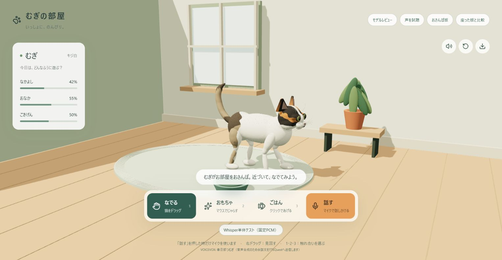

むぎの部屋
機能仕様書
3D猫「むぎ」と触れ合い、日本語で話しかけるWebアプリケーション
01 目的・対象範囲
本アプリは、ブラウザ上の3Dの部屋で猫をなでたり、おもちゃで遊んだり、ごはんをあげたりする体験を提供する。マイクによる日本語の話しかけと、猫として生成された返答の表示・読み上げに対応する。
本書は利用者から見える機能と操作結果を定義する。現行実装と既存の詳細設計書を根拠とし、受入条件は今後の確認基準として示す。
| 対象 | 内容 |
|---|---|
| 主機能 | おさんぽ版の猫、触れ合い、状態表示、視点操作、モデル保存、音声会話。 |
| 補助機能 | 比較用モデル、毛並みレビュー、日本語音声の試聴、固定音源による音声認識診断。 |
| 対象外・未実装 | アカウント登録、アプリ独自の認証、セーブ・ロード、端末間同期、会話履歴の永続保存、試聴音声のゲームへの自動適用。 |
標準のおさんぽ版を基準とする。比較用モデルでは見た目・行動・保存方法が異なるため、標準版の行動や数値規則を一律には適用しない。
02 利用条件
| 項目 | 利用条件 |
|---|---|
| ブラウザ | WebGLおよび音声関連APIを利用できるブラウザ。ChromeまたはEdgeを想定。対応バージョンや全ブラウザでの動作保証は未確定。 |
| 入力装置 | マウス・キーボードを基本とする。音声会話にはマイクと使用許可が必要。 |
| 通信 | 初回の音声認識モデル取得、会話生成、外部音声合成にインターネット接続が必要。 |
| 会話の準備 | 管理者がサーバー側へOPENROUTER_API_KEYを設定する。キーなしでも3Dの触れ合いは利用可能。 |
| マイク・再生 | マイクが利用できる安全な接続環境とブラウザ権限が必要。音声再生はブラウザ・OSの制約を受ける。 |
03 画面一覧
| 画面ID | URL | 用途 |
|---|---|---|
| SCR-01 | / | むぎの部屋。おさんぽする猫との触れ合い・音声会話。 |
| SCR-01A | /?model=seated | 座った版との比較。 |
| SCR-01B | /?model=original | 元のモデルとの比較。 |
| SCR-02 | /review | 毛並み・質感を回転・拡縮して確認。 |
| SCR-03 | /voice-samples | 端末上で利用可能な日本語音声を試聴。 |

メイン画面は3D表示、猫の状態カード、視点・音量・保存ボタン、案内メッセージ、触れ合いと会話の操作ボタンで構成する。モデルレビュー・音声試聴へのリンクから補助画面へ移動し、戻るリンクでメイン画面へ戻れる。
04 機能仕様
| ID・機能 | 操作・条件 | 結果 |
|---|---|---|
| F-01 3D表示 | メイン画面へアクセス。 | 部屋と猫を読み込み、準備中の案内を表示。読込成功後に主な操作を有効にする。 |
| F-02 なでる | 「なでる」または1キーを選び、猫の上で左ボタン押下・ドラッグ。 | 命中時に猫が立ち止まり、なでられる動作とメッセージを表示。なかよしが増える。食事中はなでる反応を行わない。 |
| F-03 おもちゃ | 「おもちゃ」または2キーを選び、猫の近くでマウスを動かす。 | おもちゃを表示。反応範囲内では猫が追視・前足の動作をし、ごきげんが増える。食事中・器へ移動中は遊びを抑制。 |
| F-04 ごはん | 「ごはん」または3キーを選択。選択中は左クリックでも要求。 | 器にごはんを表示し、猫が器へ向かう。到着して向きを合わせると食事開始。食後に鳴いて、通常行動へ戻る。 |
| F-05 自律行動 | 画面を表示して待つ。 | 待機、歩行、座る、毛づくろい、睡眠、伸び、見る、接近、短いダッシュ等を状況に応じて選ぶ。 |
| F-06 視点操作 | 右ドラッグ、ホイール、視点リセット。 | 視点を回転・拡縮する。リセットで標準版は猫の現在位置を基準に見やすい視点へ戻る。 |
| F-07 鳴き声 | 触れ合い、食後、自律行動等。消音ボタンで切替。 | 猫の鳴き声を再生。重複再生を抑制する。消音は猫の鳴き声に適用し、会話の読み上げには連動しない。 |
| F-08 モデル保存 | モデル保存ボタン。 | 表示版に対応する猫のGLBファイルをダウンロードする。ゲームの進行状態の保存機能ではない。 |
| F-09 モデルレビュー | レビュー画面を開き、ドラッグ・ホイール操作。 | 猫の毛並み・質感を確認できる。自動回転する。この画面ではゲーム行動を実行しない。 |
| F-10 音声試聴 | 音声試聴画面で「この声を試聴」。 | ブラウザの日本語音声で定型文を再生する。別の音声を再生すると先の再生を停止。ゲームの声の設定は変更しない。 |
| F-11 音声認識診断 | 「Whisper単体テスト（固定PCM）」。 | 既存の猫の鳴き声音源を使い音声認識を実行。文字が認識されれば会話生成・読み上げへ進む。 |
音声試聴は一覧の順番に応じて「明るく」「ふんわり」「おっとり」の速度・高さ・音量を割り当てる。同一音声の3種類を並べて選ぶ仕様ではない。日本語音声が見つからない場合は読み込み案内を表示する。
05 音声会話仕様
- 利用者が「話す」を押した時点でマイクを要求する。
- 録音中はボタンを「止める」に変更。利用者の停止操作、または12秒経過で録音を終了する。
- 録音をブラウザ内で日本語の文章に変換する。初回は認識モデルの準備案内を表示する。
- 認識文と直近の会話履歴を会話サービスへ送信する。
- 返答文をメッセージ欄に表示し、VOICEVOXの春日部つむぎ（speaker 8）で読み上げる。
- 外部音声の取得や再生に失敗した場合、ブラウザ標準の日本語読み上げを試みる。
| 規則 | 仕様 |
|---|---|
| 処理中の操作 | 文字起こし・返答生成・読み上げ中は「話す」と固定PCMテストを無効にし、処理状態を表示する。 |
| 短い録音 | 0.25秒未満の録音は案内を表示して終了する。 |
| 入力上限 | 会話APIは前後の空白を除いた1〜600文字を受け付ける。認識文が上限を超える場合は会話に進めず案内する。 |
| 返答内容 | 猫「むぎ」としてやさしい日本語、2文までの短い返事を生成するよう指示する。生成結果の内容や文数は厳密には保証されない。 |
| 返答表示 | 最大900文字の返答を扱う。生成サービスから有効な返答が得られなければエラー案内。 |
| 履歴 | 成功した発言・返答の末尾6件をページ内に保持。サーバーでは600文字を超える履歴要素を除外する。 |
| 診断機能の用途 | 固定音源の認識実行を確認するための補助機能。日本語の認識精度を判定する試験ではない。 |
06 表示・状態の規則
| 表示・条件 | 標準おさんぽ版の規則 |
|---|---|
| なかよし | 初期値42。なでる反応で2増加、食事開始で3増加。 |
| おなか | 初期値55。食事開始で18増加。98以上のときは給餌要求を拒否し、満腹の案内を表示。 |
| ごきげん | 初期値50。おもちゃへの反応で1増加。 |
| 数値の表示 | 増加時の上限は100。画面では四捨五入した整数の%とゲージで表示。 |
| 連続反応 | なでる・おもちゃの数値加算には共通の0.3秒間隔制限がある。 |
| 食事 | 器へ移動・整列してから約4秒食べ、食後約3秒待機。移動中や食事中の再要求には状態案内を表示する。 |
| 移動不可 | 部屋外、家具・器に近すぎる場所への移動を制限。器へ到達できない場合は場所を変えて再試行する案内。 |
| メッセージ領域 | 読み込み、触れ合い、会話、エラーが共通領域を使う。3D側の案内と会話文が更新によって入れ替わる場合がある。 |
07 データの保持と外部送信
| データ | 扱い |
|---|---|
| 猫の状態・会話履歴 | ページ実行中のメモリに保持。再読み込みや画面移動後の復元・同期を提供しない。 |
| 通常操作の録音 | ブラウザ内でPCMとして扱い、ブラウザ内の音声認識へ渡す。通常のメイン画面は録音そのものを会話APIへ送信しない。 |
| 認識文・履歴 | アプリの会話APIを経由してOpenRouterへ送信する。 |
| 返答文 | 音声合成のためブラウザからTTSQuestへ送信する。 |
| 音声試聴 | ブラウザ・OSが提供する音声を使う。音声処理の実行場所等は各環境の実装に依存する。 |
| APIキー | サーバー側で管理し、利用者画面へ入力・表示する機能はない。 |
別途WebM録音を受け取る音声APIが存在するが、現行のメイン画面からは使用されない。そのAPIを直接利用する場合は録音データが外部文字起こしサービスへ送信される。外部サービス側の保存期間は本書では規定しない。
08 エラー時の動作
| 発生条件 | 利用者への結果 |
|---|---|
| 猫モデルの読込失敗 | 猫を読み込めない旨と、再読み込み・Chrome/Edgeの利用案内。 |
| マイク権限拒否・取得失敗 | マイク使用を許可し、再度「話す」を押す案内。 |
| 認識モデルの準備失敗 | ネット接続の確認と再試行を案内。 |
| 文字起こし結果が空 | 聞き取れなかった案内を表示し、再録音できる状態へ戻る。 |
| 会話機能の設定不足 | 準備が完了していない旨を表示。会話APIは503。 |
| 会話サービスの失敗・タイムアウト | 接続失敗や時間をおいて再試行する案内。会話APIは502。 |
| 入力が長すぎる等 | 短く話しかける等の案内。会話APIは400。 |
| 外部合成音声の取得・再生失敗 | 標準読み上げを試し、それも失敗した場合は音声再生失敗の案内。 |
| レビュー画面の読込失敗 | 現行実装ではLOADING表示が継続。専用のエラー案内は未実装。 |
会話サービスの正常応答が空の場合は1回だけ再試行する。HTTPエラーやタイムアウト時の自動再試行は行わない。ネットワーク待機を含む全体の応答時間は保証していない。
09 品質・制約
- 描画の滑らかさや音声認識時間は端末性能に依存する。FPS・最大応答時間・同時利用人数などの定量的な保証値は未設定。
- 画面離脱時には描画、マイク、再生中音声、イベント等の終了・解放処理を行う設計。全経路での手動確認は未完了。
- 音声の種類・品質はブラウザとOSに依存する。日本語音声が利用できない環境がある。
- スマートフォンの全操作対応、ブラウザ別の対応表、アクセシビリティの適合水準は未確定。
- 現行実装にアプリ独自の利用者認証、APIレート制限は確認できない。公開運用の条件は別途整理が必要。
既存記録にある未完了事項
本番ビルドは終了コード1で原因未特定。Lintには既存指摘がある。pre-commit導入・有効化も未完了。3Dの手動操作、マイク会話、外部API連携のブラウザ確認は未実施。本書の作成をもってこれらの解消・合格とはしない。
10 受入条件
以下は確認基準であり、実施結果ではない。標準版を基本とし、会話試験にはAPIキー・マイク権限・外部通信環境を用意する。
| ID | 対応機能 | 確認操作 | 受入条件 |
|---|---|---|---|
| A-01 | F-01 | メイン画面表示 | 準備中から3D表示へ進み、主な操作が可能になる。 |
| A-02 | F-02 | 猫の上を左ドラッグ | 猫が反応し、なかよしが規則に従って増える。 |
| A-03 | F-03 | 近くで玩具を動かす | おもちゃ・前足の動作が現れ、ごきげんが増える。 |
| A-04 | F-04 | 給餌と満腹時の再要求 | 器への移動、食事、数値更新、通常行動への復帰、満腹拒否を確認できる。 |
| A-05 | F-05 | 一定時間待つ | 自律行動が変化し、部屋や障害物を避けて移動する。 |
| A-06 | F-06〜08 | 視点操作・消音・保存 | 回転拡縮・リセット、鳴き声の消音切替、対応するGLB保存ができる。 |
| A-07 | 音声会話 | 録音の手動停止・12秒待機 | 両経路で録音が終わり、認識・返答表示・読み上げへ進む。 |
| A-08 | 音声会話 | 処理中に再操作 | 文字起こし・返答生成・読み上げ中は会話開始ボタンが無効。 |
| A-09 | 音声会話 | マイク拒否・空認識・上流失敗 | 対応する案内が表示され、利用者が次の操作を判断できる。 |
| A-10 | 音声会話 | 外部音声取得を失敗させる | 利用可能な環境で標準読み上げへ切り替わる。 |
| A-11 | F-09〜10 | レビュー・音声試聴 | モデル確認・日本語音声試聴ができ、試聴でゲーム設定が変更されない。 |
| A-12 | F-11 | 固定PCMテスト実行 | 認識を実行でき、空結果と非空結果を仕様どおり扱う。 |
| A-13 | データ保持 | 会話後に再読み込み | 履歴・状態が初期化され、永続保存されていないことを確認。 |
11 関連資料・改訂履歴
| 版 | 日付 | 改訂内容 |
|---|---|---|
| 1.0 | 2026-10-19 | 現行実装に基づく機能仕様書を作成。操作、状態、外部送信、例外、受入条件を整理。 |
文書は外部CSS・JavaScriptなしで閲覧可能。画面画像はリポジトリ内の相対パス参照。ブラウザの印刷機能から印刷・PDF保存ができる。
追記：ビルド検証（2026-10-19）
WindowsのNode.js 24.11.1ではビルドプロセスが0xC0000409で異常終了。Node.js 22.23.3では本番ビルド成功（終了コード0）を確認した。.nvmrcとpackage.jsonで22系を指定する。本文中の従来のビルド失敗記録はこの結果で更新する。システムNodeは変更していない。Lint・ブラウザ手動操作・公開デプロイは引き続き未検証。
追記：Lint修正（2026-10-19）
npm run lintの成功を確認。UIの意味付け、未使用コード、会話履歴の型、購読処理を修正。マイク収録をScriptProcessorNodeからAudioWorkletへ移行した。PCMの順序・停止時の末尾データ・空録音の自動テスト2件に合格。実ブラウザ・実マイクの確認は未実施。本文中の既存Lint指摘の未解消記録はこの追記で更新する。
追記：残課題対応（2026-10-19）
ローカルPython・pre-commit・Gitleaksを導入し、全対象検査に合格。独自語は00.secret/security-keywords.jsonから読む。本番画面の500を3Dコードのクライアント側遅延読み込みで解消し、5経路200を確認。API・移動・PCMの自動テスト9件と検査器テスト2件に合格。ブラウザ操作接続・実マイク・APIキーがないため、実操作と実外部会話は未確認。検証結果を参照。本文の旧検査環境・検知語の追跡解除手順は本追記で更新する。